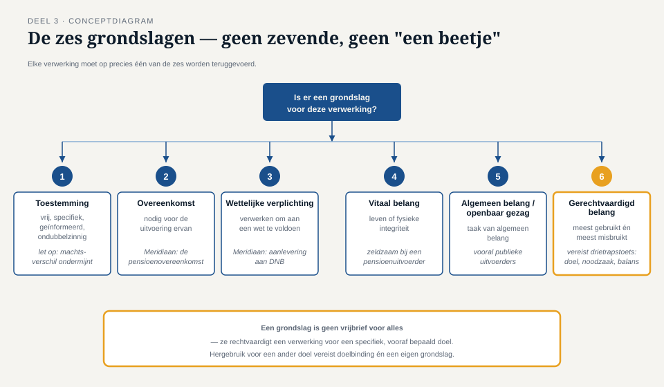
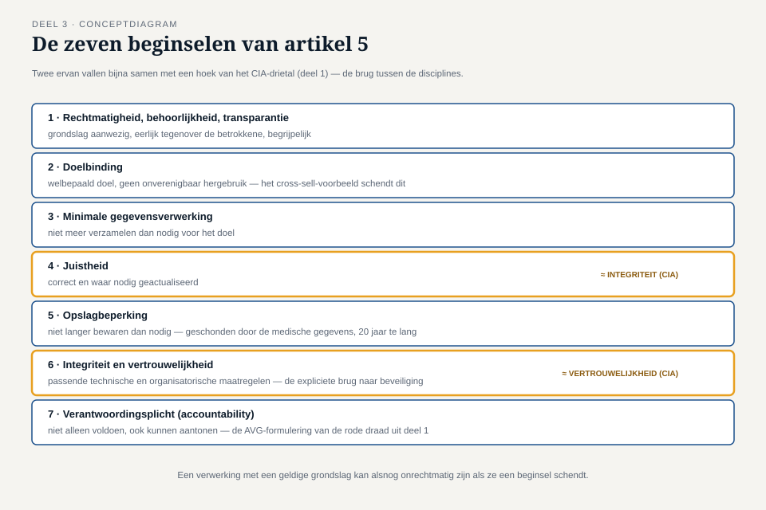
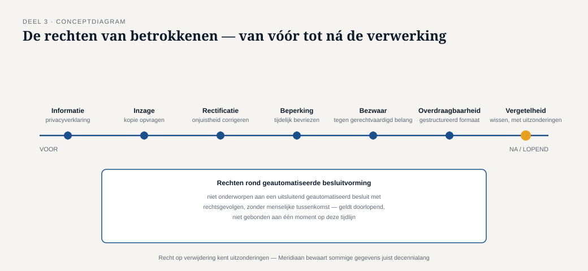

Deel 3 — De AVG in essentie
Slidedeck · Ductus-cursus Informatiebeveiliging en privacy · niveau 1 · deel 3 van 10 · 24 slides
Slide 1 — Titel
Informatiebeveiliging en Privacy
Deel 3 · Niveau 1 · Fundament
De AVG in essentie
Slide 2 — Sannes wedervraag
"Je weet nu wát er mis kan gaan met onze systemen.
Maar weet je ook wélke gegevens we verwerken, waaróm, en of dat mag?"
Merel: nee. Nog niet.
Slide 3 — Twee kernbegrippen
Persoonsgegeven — direct of indirect herleidbaar tot een levend persoon
Verwerken — vrijwel élke bewerking daarvan
Slide 4 — Hoe breed is "verwerken"?
Verzamelen, opslaan, ordenen, raadplegen, gebruiken,
verstrekken, combineren, wissen...
Bijna geen handeling met een persoonsgegeven is géén verwerking.
Slide 5 — Opdracht 3.1
Vijf gegevens. Persoonsgegeven? Bijzondere categorie?
Slide 6 — De AVG staat niets zomaar toe
Elke verwerking heeft een grondslag nodig.
Precies zes. Niet meer, niet minder.

Slide 7 — De zes grondslagen
- Toestemming
- Overeenkomst
- Wettelijke verplichting
- Vitaal belang
- Algemeen belang / openbaar gezag
- Gerechtvaardigd belang
Slide 8 — De meest misbruikte grondslag
Gerechtvaardigd belang.
Vereist een echte afweging: doel, noodzaak, balans.
Vaak ingeroepen zonder die afweging ooit te maken.
(vooruitwijzing deel 17)
Slide 9 — Opdracht 3.2
Vier verwerkingen bij Meridiaan. Welke grondslag?
Slide 10 — Een grondslag is geen vrijbrief
Gegevens verzameld voor doel A
mogen niet zomaar gebruikt voor doel B.
Dit heet: doelbinding.
PAUZE
Slide 11 — De zeven beginselen van artikel 5
Meer dan een grondslag alleen.

Slide 12 — De zeven op een rij
- Rechtmatigheid, behoorlijkheid, transparantie
- Doelbinding
- Minimale gegevensverwerking
- Juistheid
- Opslagbeperking
- Integriteit en vertrouwelijkheid
- Verantwoordingsplicht
Slide 13 — Twee die het vaakst sneuvelen
Doelbinding — hergebruik zonder eigen grondslag
Opslagbeperking — bewaren langer dan het doel vereist
(koppel terug: opdracht 1.2, situatie 3 en 5 uit deel 1)
Slide 14 — De laatste: verantwoordingsplicht
Niet alleen voldoen. Ook kunnen aantonen.
Dit is de AVG-versie van de rode draad uit deel 1:
aanwezig ≠ aantoonbaar.
Slide 15 — Opdracht 3.3
Vier situaties. Welk beginsel wordt geschonden?
Slide 16 — Rechten van betrokkenen

- Informatie · Inzage · Rectificatie
- Verwijdering · Beperking · Overdraagbaarheid
- Bezwaar · Geautomatiseerde besluitvorming
Slide 17 — Niet onvoorwaardelijk
Elk recht kent uitzonderingen.
Een pensioenuitvoerder heeft vaak wettelijke bewaarplichten
die verwijdering in de weg staan.
Slide 18 — Opdracht 3.4
Een deelnemer wil inzage én verwijdering van een oud adres.
Welke rechten? Moet Meridiaan onvoorwaardelijk voldoen?
Slide 19 — Bijzondere categorieën
Gezondheid, ras, religie, seksuele geaardheid, politieke opvattingen...
In beginsel verboden, tenzij een uitzondering geldt.
Bij Meridiaan: arbeidsongeschiktheidsdossiers.
Slide 20 — Vooruitwijzing
Bijzondere persoonsgegevens komen terug
als kern van de masterproef in deel 30.
Slide 21 — De brug naar deel 1
"Integriteit en vertrouwelijkheid" (beginsel 5)
= vrijwel letterlijk het CIA-drietal.
De AVG behandelt beveiliging niet als bijzaak.
Slide 22 — Opdracht 3.5
Welk beginsel = integriteit (CIA)?
Welk beginsel = passende beveiliging (CIA)?
Slide 23 — Waarom Merel en Sanne elkaar nodig hebben
De wet zélf koppelt de twee disciplines aan elkaar.
Geen privacy zonder beveiliging. Geen beveiliging die privacy overbodig maakt.
Slide 24 — Vooruitblik
Deel 4: wie doet wat — en waarom mag Sanne Merels werk niet doen
(en andersom)